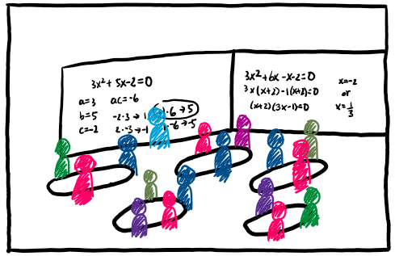

by Dr. Johan Benedict Cristobal, dated December 22, 2025
Recently, a “shocking” report came out from University of California, San Diego and Senate-Administration Workgroup on Admissions which detailed, for one, an increase in the number of incoming college students’ needing a remedial mathematics course. News cycles ran with it, sparking various (demeaning) discourses about the state of US college education including, and certainly not limited to, politicians using the report to get their agenda of anti-inclusivity across or people who still believe in “reserved spots” for students of color. All this to say, it’s been very difficult to not have big feelings about this topic and its subsequent discourses.
I initially frame this essay as a response to Dave Kung’s recent essay "Re: Students are Struggling. Why?" for the MAA Math Values blog in which he does a much better job than many to give context to the downward trend in the levels of college mathematics preparation. Though, this essay is less of a response and more of a jumping off point from Dr. Kung's essay. This quote struck me the most:
There are other potential explanations for the global downturn in scores. Maybe everyone is impacted by worries about climate change, economic uncertainty, and the turn toward authoritarianism – and smart phones just give us easier access to upsetting information.
I think his choice to highlight phone use and his mention of student worries about global sociopolitics did not stick the landing (for me) in his important perspective on the issue. Put simply, I do not think it is the phones at fault, nor do I point the blame towards students, themselves, devaluing their participation in their education. From this point, I sought to put to words why this quote struck me, and that is how this essay was born.
(Contextual positioning note: I can only speak to the U.S. context and not the global trend.)
We live in a society which I believe has sent a message to students that they have to fend for themselves (see the rise in hyper-individualism), and when you’re in survival mode, you aren’t allowed to recognize the value of allegedly important things. “Will knowing how to solve this equation allow me to gain financial stability when the economy inevitably crashes?” is not a farfetched question to have with or without seeing the “doom scroll” slop the latest algorithm pushes to our phones. Time and time again, it is reinforced (by peers, by adults, by society) in students' minds that mathematics is not something that will immediately help them in times of crisis, whether that is through the mundanity of lectures or sterile worksheets with little connection to their lived realities.
Here, instead of giving you a multi-dimensional solution or cause, I want to provide a perspective from someone who recently taught these “remedial” mathematics courses. Additionally, it is my hope to get across this message: Figuring out why this downward trend is happening or why students are struggling is not as helpful to students, current and future, since the solution is not as simple as figuring out its many causes and reversing them. (To simplify and shorten an otherwise lengthy discussion, the possible causes for these symptoms in academia are rooted in late stage capitalism and an anti-intellectual movement that we, as educators, are not sufficiently-equipped to steer away from.)
Instead, we should focus on helping students who have been deemed unprepared for college-level mathematics. Harrowingly, I did see someone suggest the problem be fixed by preventing these struggling students from enrolling into the university (through more red tape).
But how do we help these students who are not meeting typical levels of college readiness? How do you help a population which has developed learned helplessness and is mostly going to college to delay the inevitable “real world”? The short (perhaps corny) answer is to have empathy, to meet students where they are at, and looking at them as capable of success and not as someone who needs fixing. I go even as far as to view my students as being capable of becoming mathematicians or professors. That might have made you chuckle, certainly my students did; they scoffed at the idea of doing more math after their required two or three courses. But this unyielding belief of mine (and plenty others, shoutout Dr. Kaitlin Tademy) that anyone can do math is the first step to remedying students’ buy-in and participation in their mathematics education and math journey. Below, I expand on these three (corny) answers, providing along the way some of my experiences and perspective as a “remedial” mathematics instructor at the college-level.
The most important thing I could ever ask for from a math teacher is for them to have empathy. Being empathetic towards students is what helps them feel understood, it makes them feel like you genuinely care about them as a person, rather than just students they are required to teach… The empathy that Johan has given me is the reason that I have continued to push myself throughout this course. I was sick very often this year… I had to miss lots of math classes. Johan quickly put me at ease because he was understanding of my circumstances and was willing to help me... Without the empathy Johan has shown me, I would not work as hard as I do now in class because I now know that even if I am behind, what I am doing is still good enough… Being successful means you ask for help, give all effort, let yourself take breaks, and to be proud of yourself for who you are and what you have done.
Near the end of every semester (or quarter), I offer my students an extra credit assignment which asks them to read two essays I have written (one in response to the statement “Math is Hard” and one about defining what Success means). Then, they write a reflection of how their semester of mathematics went, using the essays as a spark for their intro/retrospection.
The long paragraph I attached above is from one of my unruly students, one who began the semester adamant about their lack of affinity with mathematics and how they would be a “trouble” student who would always need three or four explanations to “get it.” Before the reflection assignment, they would also argue with me that if they did not get an A in the course, that it was a sign of failure for having put in so much work only to achieve subpar performance. It was reassuring to know that the essays and the reflection had a positive impact on this student. It is reflections and narrative arcs like this one that have allowed me to keep a headstrong perspective on empathy and compassion for my students. An easy question I would ask myself is: “what would I want my instructor to do if I was in this students’ situation?”
I find it extremely important to deliver the message of these two essays to the students of my “remedial” mathematics course, because often they are the students who come into mathematics with fear, dread, hatred, or a mix of the three. But these students also tend to have a skewed perspective on what it means to be successful in a mathematics course or what it means for their teacher to deem them successful.
(Side notes: I found, through trial and error, that this reading and reflection assignment does not work if given early in the semester. While it would be nice for students to understand how to define their success in the course early on, I found that the message did not land for students until after they have gotten used to my teaching practice and philosophy that I demonstrate daily. Certainly, the fact that it was written by their current instructor also helps land the message, as opposed to some stranger’s writing.)
The road goes both ways though, I also try to elicit empathy from my students by telling them why I’m doing things---have them stand in my shoes as their instructor. Why is there a quiz every week? Why is there homework every day? Why are we taking an exam next week? What is this written assignment doing for my students? By allowing students into the metaspace of my pedagogy, my students can reframe their learning and the “crazy” expectations I have for their work and effort. But, most pertinent to the issue of engagement and participation, it gives students a reason to care about what’s happening day-to-day instead of the unsaid “you must learn X Y Z topic because it’s part of your degree” sentiment. If you are interested, you can look at this excerpt in each of my course syllabi where I outline some reasons for why we do things in my class.
This mission of empathy begins on the first day, it is reinforced on the second day, and it is repeated every day until my students walk out of their final. It is not an easy task, and each educator will need to figure out their technique for it, but by explicitly embedding empathy in your pedagogy and approach to teaching, students will notice and will (hopefully) reciprocate.
You made the words “I hate math” get out of my daily use of vocabulary. And although I do dread math, every time I had your class I actually felt happy going. I’ve seen my growth after taking your class… I went from not knowing how to do the simplest things to attempting the problem and trying my hardest with what I understood from the lectures. I’ve learned that failure isn’t a bad thing. It’s necessary for growth just like any other thing.
If you happen to come across my Teaching Statement from my job applications, you would read the sentiment that I ask students to never leave questions blank. As an early-career educator and mathematics education researcher, I do feel some tension and anxiety that readers might think I am blowing smoke to their faces. But, it is student reflections like this one above that remind me that my insistence for no blank answer has a profound positive impact on students’ ability to start, let alone do, math. I emphasize that I am not grading for perfection, instead I am meeting them where they are in their journey; I grade for evidence of growth and learning which helps students get past the stage fright of doing mathematics for an authority figure (me) to judge.
As someone who teaches courses filled with first-year college students, it is a great privilege and challenge to be their first mathematics experience in college. However, this position can easily fall into the adversarial mindset that their K-12 education failed them. (See the fingerpointing “you should’ve learned this in high school or middle school” blaming that I have heard from well-intentioned and well-meaning educators.) But, I refuse to play into that charade. Because, to be blunt about it, that does not matter to me; I will teach a graduate student how to subtract fractions with the same empathy as I would teaching a middle schooler or high schooler. To me, this student found a spot in my classroom and it is now my job to see them succeed in the curriculum the university gave me. If that success calls for teaching them how fractions work, then I teach them or at the very least, I point them towards resources.
With that said, there are a ton of online resources, and for many of us educators, it may seem obvious for students to “look things up” and “catch up on their own,” but they are drowning. Something I noticed with my students is that they drown in resources when I give them all these amazing things I know help their success. Revisiting empathy, I remember being an incoming graduate student instructor and being bombarded for three days in a row with information on how to be a successful instructor. It was a lot, and I still felt unprepared and unsuccessful in my first classroom.
Learning from this, I have begun drip-feeding resources. For example, when an exam rolls around, I start with a study guide that details all the topics on this exam, then two days later, they get a practice exam, followed by the solutions and grading rubric a day later, and then another practice exam. My students witness the growth of resources in our shared online learning management platform, which feels extremely different from being handed a stack of resources---the same amount of materials but the delivery is different.
To me, empathy and this idea of meeting students where they are at are connected to the research I did/do/will do: frames in mathematics education. In short, frames can explain how someone notices, interprets, and responds to a given situation. (You are welcome to read more here: What are Frames in Mathematics Education?) Pertinent to this discussion, though, is my hypothesis that students’ frames of their own learning and what the instructor is doing (i.e., how they interpret and act on their learning and instructor’s actions) is wholly misaligned with instructor’s frames of their own teaching and how their students learn. And so, for my own teaching, I intentionally try to transform how my students see their learning to be more aligned with how I see it (e.g., as a journey that will be difficult, but nevertheless, a fruitful and successful one). At the same time, I transform(ed) how I see my teaching to be more aligned with their perspective (e.g., mixing lectures with group-based active learning modules as they still see lecturing as essential for them to feel like they learned).
Solving problems might seem unimportant sometimes, but it’s deeper than just finding an answer. It’s a cycle of trying and failing until you succeed, and I think that’s how you build character and grit… Yes, math can solve problems and help create buildings, planes, and many things we see in everyday life, but the lessons you go through while learning it teach you even more. Instead of simply labeling math as “hard,” we should ask ourselves, “What is it teaching me?” If we think this way, people may feel more open to math, and more people can apply what math truly teaches to their lives.
A dangerous rhetoric and attitude coming out of this UCSD debacle is the belief that these students do not deserve to be at UCSD or other high ranking university. In light of the rise of authoritarianism and fascism in the United States, adding barriers to higher education or further feeding into the elitist rhetoric that college is only for the elites are merely adding more oil to the slippery slide down into fa- This is getting sidetracked.
In any case, my argument here is, again, grounded in my axiomatic belief that everyone can do math, that everyone could do the cutting-edge research happening at the forefront of analysis, topology, machine learning, and so on, if only they are given ample support and encouragement. The issue here is two-step: you must convince yourself of this axiomatic belief first; that even your college student who currently struggles to solve “6+3=7+__” can get to a point where they understand, for example, the construction of real numbers by Dedekin cuts. The magic trick is to focus on what the students bring to their learning and less on what it is they are lacking. (See the literature on asset-based pedagogy and instruction.)
The next step is to convince your students of this, to any positive degree. You will get students who will never believe you, especially those in the “remedial” math course because of previous hurt. But, I urge you to insist---to keep insisting that you see them as fully capable of success in your class and even beyond. Unfortunately, I do not have a magic trick for you or literature to direct you toward in accomplishing this. However, what I can promise you is that there is intangible power here when students accept that they can do it. (Paul Tough’s 2014 article titled “Who Gets to Graduate” comes to mind on the power and impact of treating students as capable.)
Earlier, I posed the questions: how do we help these students who are not meeting typical levels of college readiness? How do you help a population which has developed learned helplessness and is mostly going to college to delay the inevitable “real world”? While it is a wicked problem to solve fully, it is our shared duty as the instructors who meet these students to support them. We can help these students by facilitating their vision to see themselves as capable of success through empathizing and meeting them where they are. Through this, I believe students can begin to see value in engaging with their mathematics education and in putting down the doom scrolling even just for a moment---to realize that their college journey is a way to help themselves and their community and mathematics is one integral aspect of that journey.
I believe empathy, meeting students where they are at, and seeing them as fully capable of success are all possible preventative remedies for the downward trend we saw in this report. Moreover, these remedies can be implemented at the K-12 level. I am very aware of my limited perspective as only having taught at the college level and the optics of yet another college instructor telling K-12 instructors what to do and not do. I make no claim that what I shared here will truly fix and undo the downward trend of college preparedness. However, I believe reapproaching mathematics education at all levels with these philosophies can only lead to positive impacts for students' learning experience. It at least has helped a nontrivial number of my students from various backgrounds. I can only hope that more students begin to see the value of engaging in their own education journey and that can and should begin before they head off to college.
I hope this perspective served as a reminder that there are struggling students behind these statistics and they deserve to be helped and not just critiqued for their alleged shortcomings.
Thank you for reading and happy holidays.

Briefly, Dr. Johan Benedict Cristobal is currently a visiting teaching faculty member of Loyola Marymount University's Mathematics, Statistics, and Data Science Department. He received his Ph.D. in Mathematics at the University of Nebraska-Lincoln, under the advising of Dr. Yvonne Lai. His undergraduate mathematics education research is focused on instructors' and students' frames as it relates to teaching and learning of mathematics, and how frames research can inform critical transformation to improve learning experiences for all students. His views and opinions expressed here and his website are his alone and are not a representation of his previous or current employment. If you would like to find out more about Dr. Cristobal, you can peruse his website here, https://www.johanmath.com.